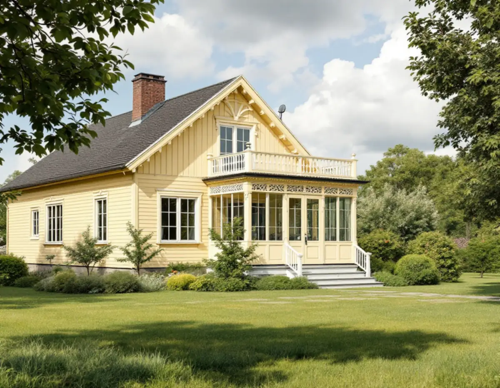
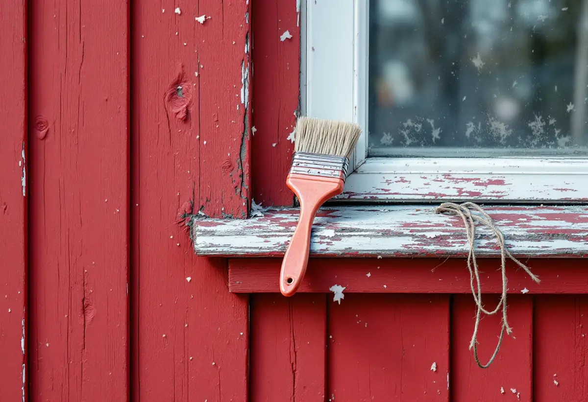

Platsbesök
Huset, området och grannhusens kulörer går vi igenom.
I Hässelby villastad har nästan varje hus en egen färgsättning, medan radhusen i Hässelby gård och Hässelby strand målades lika i hela gruppen. Geal Entreprenad AB målar om fasader på villor, radhus och kedjehus i Hässelby och börjar med vilket slags område huset står i.

Stadens strategi för småhusområden räknar Hässelby villastad till villastäderna, som var privat organiserade och därför fick en brokigare bebyggelse än stadens egna egnahemsområden. Trä var det dominerande fasadmaterialet, även om puts förekom, och glasverandor, takkupor, snickarglädje och färgsättning gav variation som syns än i dag.
Enligt stadens områdesfakta för 2025 finns 4 757 småhus med äganderätt i Hässelby villastad. I villastaden väljer vi kulör och färgtyp efter husets egen ålder och stil och tar hänsyn till detaljer som glasverandor och snickarglädje.
På 1960- och 1970-talen ersattes många villor i Hässelby villastad av täta, sammanhållna grupper av enhetliga småhus, skriver strategin. Bland villastädernas karaktärsdrag nämns grupphusområdenas sammanhållna karaktär, med exempelvis enhetlig skala, färgsättning och byggnadsmaterial.
Här gäller motsatt princip mot den äldre villastaden: kulören väljs för gruppen, inte för det enskilda huset. Har grannarna redan målat om tar vi fram deras kulör, och är gruppen spretig utgår vi från det som syns mest i gruppen och från skrapprov på det egna huset. Strategin råder att förändringar i sammanhållna grupper av villor, radhus och kedjehus utformas utifrån ett helhetsperspektiv.
Hässelby gård och Hässelby strand hör till tunnelbanestadens gruppbyggda småhusområden, och båda är markerade som kulturhistoriskt värdefull miljö i strategins tabell. Bland områdenas karaktärsdrag nämner strategin enhetligt utformade husgrupper och tidstypisk färgsättning.
Stockholms stad påpekar att utökad lovplikt gäller i särskilt kulturhistoriskt värdefulla byggnader och områden, och Stadsmuseets klassificeringskarta ger en första indikation på om din fastighet berörs. En ny kulör, till exempel från rött till vitt, är enligt Boverket en fasadändring, medan ommålning i samma kulör normalt räknas som underhåll.
Boverket skriver att en ändring av färgtyp, till exempel från slamfärg till silikonhartsfärg eller från linoljefärg till plastfärg, inte räknas som byte av kulör men kan bedömas som påverkan på byggnadens yttre karaktärsdrag. Färgtypen spelar också roll tekniskt.
Riksantikvarieämbetet varnar för att måla om en slamfärgsmålad yta med något annat än slamfärg: har man en gång bytt till latex-, alkyd- eller linoljefärg kan man inte gå tillbaka till slamfärg, ens om den befintliga färgen tas bort. Därför skrapar vi fram ett prov innan färgen väljs. Om villastadens fasader i övrigt kan du läsa under fasadrenovering i Hässelby.
En slamfärgad fasad borstas med stål- eller rotborste så att lös färg och lavar försvinner, dammas av och målas oftast i en strykning. Uppstickande spikskallar slås i och skadad panel lagas med friskt trä. En linoljefärgad fasad sodatvättas och sköljs noga, skrapas där färgen sitter löst, får spikarna islagna och grundas där det behövs. Linoljefärg ska enligt Riksantikvarieämbetet strykas mycket tunt.
Snickerier, vindskivor och foder tar vi i samma arbete. Om målning i stadsdelen i stort kan du läsa under målare i Hässelby.

Huset, området och grannhusens kulörer går vi igenom.
Färgtyp och äldre kulörer tas fram på en liten yta.
Fasad, snickerier och ställning står var för sig.
Kulören stäms av mot gruppen och kartan kontrolleras.
Förarbete och strykning i samma färgtyp som underlaget.
Vi går igenom resultatet och skriver ner färgtyp och kulör.
Skatteverket räknar målning av fasader på ett småhus som rotarbete, liksom att montera och montera ner byggnadsställningen. Du ska äga huset när arbetet utförs.
Avdraget är högst 30 procent av arbetskostnaden, högst 50 000 kronor per person och år och högst 75 000 kronor tillsammans med rutavdrag. Färg, material och resor ger inget avdrag. Geal drar avdraget direkt på fakturan.
Fasadens yta och höjd, färgtyp, underlagets skick, mängden snickerier och glasverandor och om ställning behövs. En överblick finns under målare. Efter ett gratis platsbesök får du ett skriftligt kostnadsförslag.
Fasad, fönster och invändig målning.
Målare i Stockholm →Takbyte, takbesiktning och plåtarbeten.
Takläggare i Hässelby →Villastaden, Hässelby strand och gård.
Takrenovering i Hässelby →Källarbadrum, backventil och bostadsrätt.
Badrumsrenovering i Hässelby →Riva, bygga nytt och delad tomt.
Byggföretag i Hässelby →Villastad, sommarstugor och grupphus.
Fasadrenovering i Hässelby →Slipa trägolvet – eller lägga nytt.
Golvläggare i Hässelby →Villastad, grupphus och radhus i Hässelby.
Målare i Hässelby →Plåttak efter eternit, rännor och beslag i Hässelby.
Plåtslagare i Hässelby →Altan, bod och plank i villastaden och radhusen.
Snickare i Hässelby →Eternit och asbest på taket.
Takbyte i Hässelby →Ny tapet i grupphus och villor.
Tapetsering i Hässelby →Grupphusen, eterniten och ventilationen.
Totalrenovering i Hässelby →